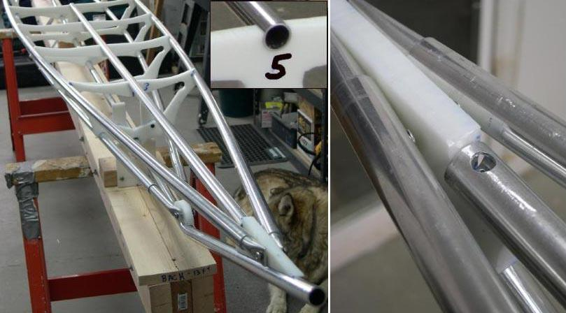

| Rear Deckridge | Menu Previous Page Next Page |
|
 Rear Deckridge Stringer - The Sea Ranger rear deck stringer is 81in long. It is made in two sections with the rear 45in section being connected to the 36in forward section with a 6in insert. The insert is riveted to the shorter section. The forward end of the rear deckridge is flush with cross section 5. |
|